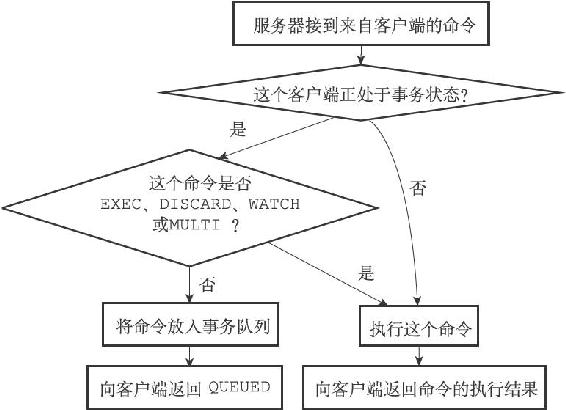
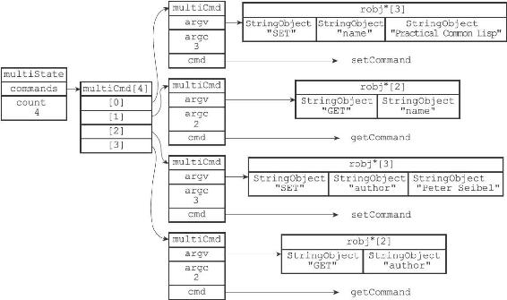

19.1 事务的实现
一个事务从开始到结束通常会经历以下三个阶段：
1）事务开始。
2）命令入队。
3）事务执行。
本节接下来的内容将对这三个阶段进行介绍，说明一个事务从开始到结束的整个过程。
19.1.1 事务开始
MULTI命令的执行标志着事务的开始：
redis> MULTI
OK
MULTI命令可以将执行该命令的客户端从非事务状态切换至事务状态，这一切换是通过在客户端状态的flags属性中打开REDIS_MULTI标识来完成的，MULTI命令的实现可以用以下伪代码来表示：
def MULTI():
#
打开事务标识
client.flags |= REDIS_MULTI
#
返回OK
回复
replyOK()
19.1.2 命令入队
当一个客户端处于非事务状态时，这个客户端发送的命令会立即被服务器执行：
redis> SET "name" "Practical Common Lisp"
OK
redis> GET "name"
"Practical Common Lisp"
redis> SET "author" "Peter Seibel"
OK
redis> GET "author"
"Peter Seibel"
与此不同的是，当一个客户端切换到事务状态之后，服务器会根据这个客户端发来的不同命令执行不同的操作：
·如果客户端发送的命令为EXEC、DISCARD、WATCH、MULTI四个命令的其中一个，那么服务器立即执行这个命令。
·与此相反，如果客户端发送的命令是EXEC、DISCARD、WATCH、MULTI四个命令以外的其他命令，那么服务器并不立即执行这个命令，而是将这个命令放入一个事务队列里面，然后向客户端返回QUEUED回复。
服务器判断命令是该入队还是该立即执行的过程可以用流程图19-1来描述。

图19-1 服务器判断命令是该入队还是该执行的过程
19.1.3 事务队列
每个Redis客户端都有自己的事务状态，这个事务状态保存在客户端状态的mstate属性里面：
typedef struct redisClient {
// ...
//
事务状态
multiState mstate; /* MULTI/EXEC state */
// ...
} redisClient;
事务状态包含一个事务队列，以及一个已入队命令的计数器（也可以说是事务队列的长度）：
typedef struct multiState {
//
事务队列，FIFO
顺序
multiCmd *commands;
//
已入队命令计数
int count;
} multiState;
事务队列是一个multiCmd类型的数组，数组中的每个multiCmd结构都保存了一个已入队命令的相关信息，包括指向命令实现函数的指针、命令的参数，以及参数的数量：
typedef struct multiCmd {
//
参数
robj **argv;
//
参数数量
int argc;
//
命令指针
struct redisCommand *cmd;
} multiCmd;
事务队列以先进先出（FIFO）的方式保存入队的命令，较先入队的命令会被放到数组的前面，而较后入队的命令则会被放到数组的后面。
举个例子，如果客户端执行以下命令：
redis> MULTI
OK
redis> SET "name" "Practical Common Lisp"
QUEUED
redis> GET "name"
QUEUED
redis> SET "author" "Peter Seibel"
QUEUED
redis> GET "author"
QUEUED
那么服务器将为客户端创建图19-2所示的事务状态：
·最先入队的SET命令被放在了事务队列的索引0位置上。
·第二入队的GET命令被放在了事务队列的索引1位置上。
·第三入队的另一个SET命令被放在了事务队列的索引2位置上。
·最后入队的另一个GET命令被放在了事务队列的索引3位置上。

图19-2 事务状态
19.1.4 执行事务
当一个处于事务状态的客户端向服务器发送EXEC命令时，这个EXEC命令将立即被服务器执行。服务器会遍历这个客户端的事务队列，执行队列中保存的所有命令，最后将执行命令所得的结果全部返回给客户端。
举个例子，对于图19-2所示的事务队列来说，服务器首先会执行命令：
SET "name" "Practical Common Lisp"
接着执行命令：
GET "name"
之后执行命令：
SET "author" "Peter Seibel"
再之后执行命令：
GET "author"
最后，服务器会将执行这四个命令所得的回复返回给客户端：
redis> EXEC
1) OK
2) "Practical Common Lisp"
3) OK
4) "Peter Seibel"
EXEC命令的实现原理可以用以下伪代码来描述：
def EXEC():
#
创建空白的回复队列
reply_queue = []
#
遍历事务队列中的每个项
#
读取命令的参数，参数的个数，以及要执行的命令
for argv, argc, cmd in client.mstate.commands:
#
执行命令，并取得命令的返回值
reply = execute_command(cmd, argv, argc)
#
将返回值追加到回复队列末尾
reply_queue.append(reply)
#
移除REDIS_MULTI
标识，让客户端回到非事务状态
client.flags & = \~REDIS_MULTI
#
清空客户端的事务状态，包括：1
）清零入队命令计数器
2
）释放事务队列
client.mstate.count = 0
release_transaction_queue(client.mstate.commands)
#
将事务的执行结果返回给客户端
send_reply_to_client(client, reply_queue)